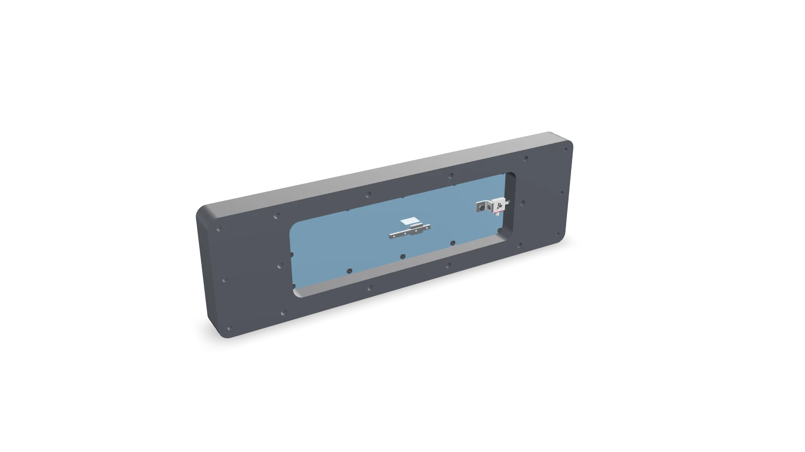

Instrument design
Floating-element shear-force balance
I did the design, the FEA and the five-sheet drawing package. Friction data from a grad student's similar rig talked me into a $159 ball-bearing carriage.

Interactive 3D · 826 KB- Constraint
- Held rigid in 5 degrees of freedom, free to slide in 1
- Sensing
- Uniaxial load cell, single load path
- Fits
- RC4 running and LC2 locational fits (ASME B4.1)
- Position tolerance
- ⌀0.010 in true position (ASME Y14.5)
- Material
- 6061 aluminum; 16 µin Ra finish on flow surfaces
- Comparable instrument
- Friction eroded ~40% of measured shear
- Carriage + rail
- About $159 of off-the-shelf parts
- Deliverables
- 5-sheet drawing set, BOM
01The problem
Skin friction is a wall shear stress, and measuring it directly means letting a small element of the wall float free in one direction while holding it still in the other five. Every parallel path that load can take is measurement error. The instrument also had to fit inside a cavity that already existed in the lab's subsonic tunnel wall, so the envelope, the mounting, and the flow-facing surface were fixed before I drew anything.
02What was mine
Design, analysis, the drawing package, and the bill of materials were mine. The tunnel hardware, the cavity and the load cell were not: I designed into them. The male-female interface I started from was a grad student's design, and the idea of trying a carriage came from him; choosing the carriage and rail and designing them in was mine.
03Getting rid of friction
The hard part is that the plate has to be locked down in five directions and still slide almost freely in the sixth. Anything that holds it in place is also something it can rub against, and any rubbing shows up in the data as shear that isn't really there.
I started from a male-female interface adapted from a grad student's comparable instrument in the lab. Before anything was cut, he told me his test data showed friction in that interface eroding roughly 40% of the measured shear force, and that he had been experimenting with carriages. I scrapped the interface, found a ball-bearing carriage and rail that fit the cavity, and rerouted the load path onto them, redesigning the mobile plate so the carriage alone supports it. The carriage and rail came to about $159 in catalog parts.
I also made the plate height adjustable. Setting it lower leaves a recess where a viscoelastic layer of varying thickness can be cured in place.
04The drawings
A five-sheet manufacturing drawing package and a bill of materials with vendor part numbers and unit costs. I modeled the assembly in Onshape and checked it under test loads with SolidWorks FEA.
Mating surfaces carry ASME B4.1 fit classes, the M4 pattern that holds the non-contact gap around the mobile plate carries a ⌀.010 true-position tolerance, and the flow-facing surfaces get a 16 Ra finish, because roughness there would change the quantity being measured. Choosing those numbers meant weighing what a university machine shop can hold against what the instrument needs.
Only two of the five parts start from raw stock. The other three are catalog or existing lab parts with features added, which keeps custom fabrication to a minimum.
05What I took away
I came out of this a lot more comfortable with GD&T. Before, I mostly knew the symbols. Doing a full drawing package meant actually picking fit classes out of ASME B4.1, setting up datums and position tolerances to Y14.5, and being able to explain why every callout was there.
It also showed me how much the drawings matter. Nobody at the machine shop was going to call me and ask what I meant, so anything I left off the page just wasn't going to end up on the part.
Honestly, the most useful thing that happened on this project wasn't something I did. The grad student's friction data showed up before anything was cut, so switching interfaces cost me a redesign instead of a rebuild. Next time I'll go looking for data on similar hardware before I commit to a load path.